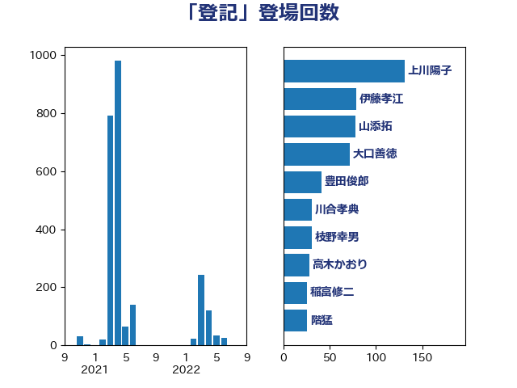

単語「登記」

| 上川陽子 | 自由民主党 | 131 回 |
| 伊藤孝江 | 公明党 | 79 回 |
| 山添拓 | 日本共産党 | 78 回 |
| 大口善徳 | 公明党 | 72 回 |
| 豊田俊郎 | 自由民主党 | 41 回 |
| 川合孝典 | 国民民主党 | 31 回 |
| 枝野幸男 | 立憲民主党 | 31 回 |
| 高木かおり | 日本維新の会 | 28 回 |
| 稲富修二 | 立憲民主党 | 26 回 |
| 階猛 | 立憲民主党 | 26 回 |
| 市村浩一郎 | 日本維新の会 | 18 回 |
| 谷合正明 | 公明党 | 17 回 |
| 中谷一馬 | 立憲民主党 | 16 回 |
| 清水貴之 | 日本維新の会 | 16 回 |
| 加田裕之 | 自由民主党 | 15 回 |
| 藤岡隆雄 | 立憲民主党 | 15 回 |
| 石川博崇 | 公明党 | 13 回 |
| 小西洋之 | 立憲民主党 | 12 回 |
| 船橋利実 | 自由民主党 | 12 回 |
| 高良鉄美 | 無所属 | 11 回 |
| 斉藤鉄夫 | 公明党 | 10 回 |
| 東徹 | 日本維新の会 | 9 回 |
| 芳賀道也 | 国民民主党 | 9 回 |
| 中野洋昌 | 公明党 | 8 回 |
| 山下貴司 | 自由民主党 | 8 回 |
| 古川禎久 | 自由民主党 | 7 回 |
| 岸信夫 | 自由民主党 | 7 回 |
| 神津たけし | 立憲民主党 | 7 回 |
| 宮崎政久 | 自由民主党 | 6 回 |
| 田所嘉徳 | 自由民主党 | 6 回 |
| 高橋英明 | 日本維新の会 | 6 回 |
| 寺田学 | 立憲民主党 | 5 回 |
| 佐藤正久 | 自由民主党 | 4 回 |
| 松沢成文 | 日本維新の会 | 4 回 |
| 梶山弘志 | 自由民主党 | 4 回 |
| 深澤陽一 | 自由民主党 | 4 回 |
| 野田国義 | 立憲民主党 | 4 回 |
| 鈴木俊一 | 自由民主党 | 4 回 |
| 中谷真一 | 自由民主党 | 3 回 |
| 小宮山泰子 | 立憲民主党 | 3 回 |
| 山本香苗 | 公明党 | 3 回 |
| 津島淳 | 自由民主党 | 3 回 |
| 清水真人 | 自由民主党 | 3 回 |
| 稲田朋美 | 自由民主党 | 3 回 |
| 嘉田由紀子 | 無所属 | 2 回 |
| 大野敬太郎 | 自由民主党 | 2 回 |
| 柴田巧 | 日本維新の会 | 2 回 |
| 牧原秀樹 | 自由民主党 | 2 回 |
| 田嶋要 | 立憲民主党 | 2 回 |
| 田村智子 | 日本共産党 | 2 回 |
| 篠原豪 | 立憲民主党 | 2 回 |
| 舟山康江 | 国民民主党 | 2 回 |
| 足立康史 | 日本維新の会 | 2 回 |
| 野間健 | 立憲民主党 | 2 回 |
| 高橋千鶴子 | 日本共産党 | 2 回 |
| 鬼木誠 | 立憲民主党 | 2 回 |
| たがや亮 | れいわ新選組 | 1 回 |
| 三宅伸吾 | 自由民主党 | 1 回 |
| 中山展宏 | 自由民主党 | 1 回 |
| 串田誠一 | 日本維新の会 | 1 回 |
| 伊藤孝恵 | 国民民主党 | 1 回 |
| 前川清成 | 日本維新の会 | 1 回 |
| 吉田統彦 | 立憲民主党 | 1 回 |
| 和田義明 | 自由民主党 | 1 回 |
| 国光あやの | 自由民主党 | 1 回 |
| 大西健介 | 立憲民主党 | 1 回 |
| 安江伸夫 | 公明党 | 1 回 |
| 宮本徹 | 日本共産党 | 1 回 |
| 山田美樹 | 自由民主党 | 1 回 |
| 山谷えり子 | 自由民主党 | 1 回 |
| 平井卓也 | 自由民主党 | 1 回 |
| 徳永エリ | 立憲民主党 | 1 回 |
| 打越さく良 | 立憲民主党 | 1 回 |
| 末松信介 | 自由民主党 | 1 回 |
| 本村伸子 | 日本共産党 | 1 回 |
| 杉尾秀哉 | 立憲民主党 | 1 回 |
| 松原仁 | 立憲民主党 | 1 回 |
| 松川るい | 自由民主党 | 1 回 |
| 武部新 | 自由民主党 | 1 回 |
| 池畑浩太朗 | 日本維新の会 | 1 回 |
| 河西宏一 | 公明党 | 1 回 |
| 浅田均 | 日本維新の会 | 1 回 |
| 笠井亮 | 日本共産党 | 1 回 |
| 義家弘介 | 自由民主党 | 1 回 |
| 菅義偉 | 自由民主党 | 1 回 |
| 蓮舫 | 立憲民主党 | 1 回 |
| 赤嶺政賢 | 日本共産党 | 1 回 |
| 赤澤亮正 | 自由民主党 | 1 回 |
| 赤羽一嘉 | 公明党 | 1 回 |
| 長友慎治 | 国民民主党 | 1 回 |